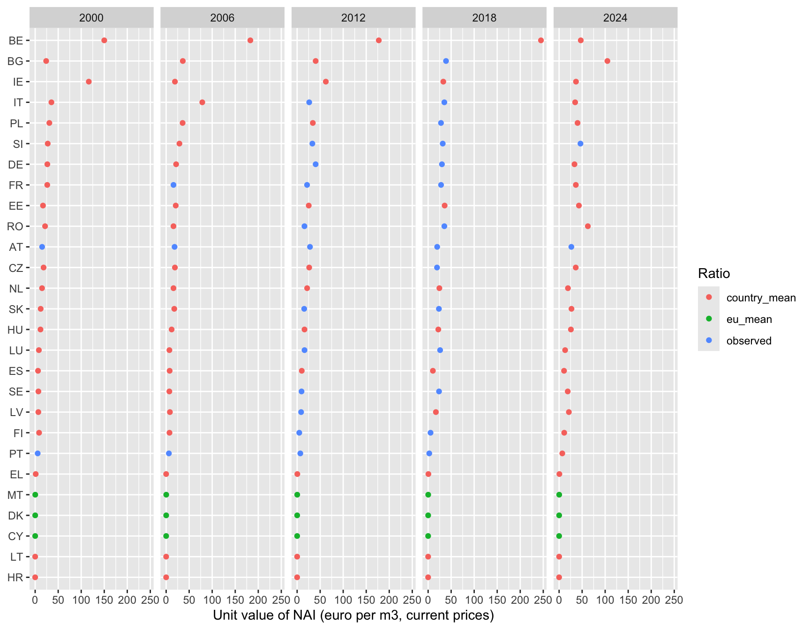
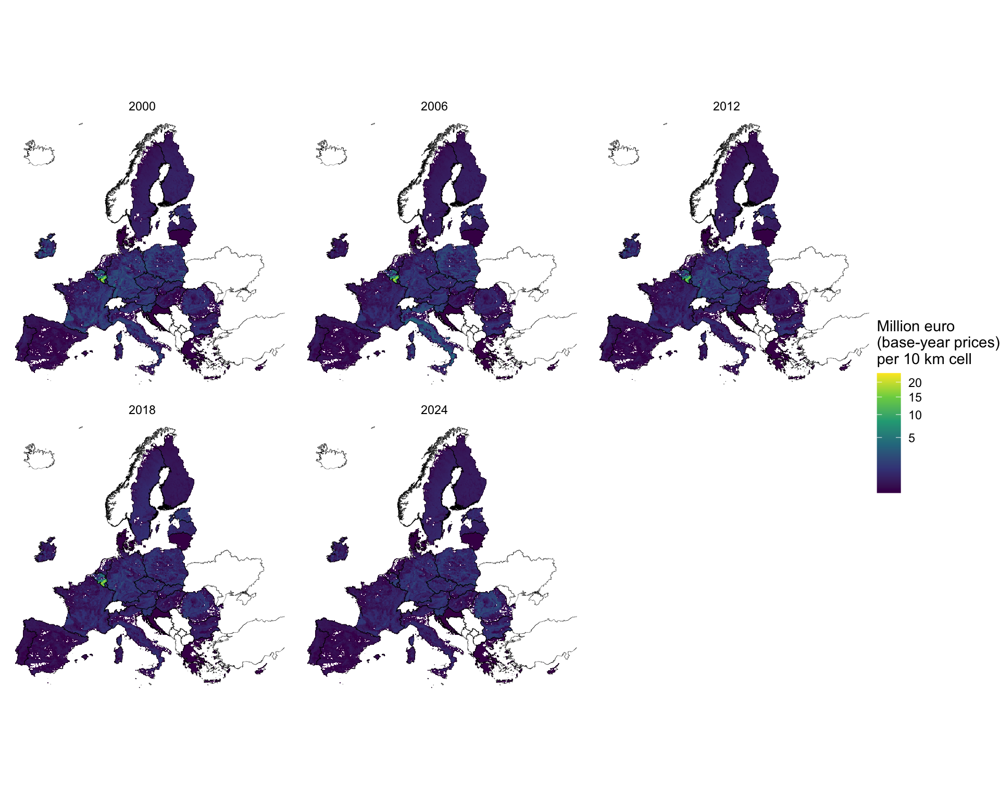
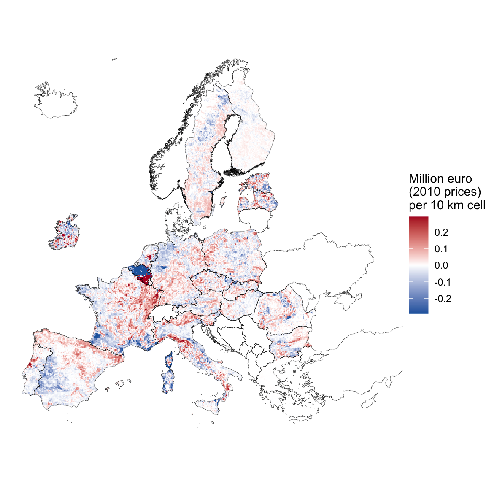

library(dplyr)
library(tidyr)
library(ggplot2)
library(sf)
library(terra)
library(flextable)
source("scripts/helpers_wood.R", encoding = "UTF-8")
source("scripts/helpers_monetary.R", encoding = "UTF-8")
source("scripts/helpers_results.R", encoding = "UTF-8")Wood Provision: Monetary Valuation
Unit values, constant prices and spatially explicit monetary flow: annotated R processing routine
Introduction
This page continues the wood provision update. The physical accounts produced the net annual increment (NAI) of forest available for wood supply (FAWS) by country and year, and mapped it. This page gives that flow a monetary value, expresses it in constant prices and maps it.
The method is the one of INCA Part III (La Notte et al., 2021) as implemented in the INCA plugin, so that results are comparable with it. It needs three Eurostat inputs and one deflator.
- Value of standing timber.
for_sup_cpreports the output of forest trees (P1_TR) in million euro (Eurostat, 2026c). Dividing it by NAI gives a unit value in euro per cubic metre. It is reported by few countries in the early years. - Unit value of roundwood exports.
for_basicreports export value and volume of roundwood (Eurostat, 2026b). It is reported by almost every country and year. - Ratio between the two. Where both unit values exist, their ratio links the well-covered export price to the sparse timber price. The ratio is completed with averages and applied backwards: unit value of NAI = export unit value / ratio.
- Deflator. The EU27 Harmonised Index of Consumer Prices (HICP) converts nominal values to constant prices (Eurostat, 2026a).
The physical flow is not recomputed here. The page reads the tables that the physical accounts exported to data/outputs/results/, so both documents stay consistent.
Key terms
| Term | Meaning in this document |
|---|---|
| Monetary value of the service | The value of the wood that the forest grows in a year, which is the net annual increment (NAI) times a price per cubic metre. |
| Unit value | A value divided by a volume, here euro per cubic metre. |
| Standing timber | Trees as they stand in the forest, before harvest. Its value is what the wood is worth before the costs of felling and transport. |
Output of forest trees (P1_TR) |
The item of the Eurostat forestry accounts that records the value of standing timber produced in a year. |
| Roundwood | Felled and cut timber, not yet processed. Its export price includes harvesting and transport, so it is higher than the value of standing timber. |
| Current prices | Values in the money of the year in which they occurred. Inflation makes them hard to compare across years. |
| Constant prices | Values converted to the prices of one base year, so that changes over time reflect quantities and not inflation. |
| Deflator | The factor that converts a current value to constant prices. It is the price index of the base year divided by the index of the year of the value. |
| HICP | The Harmonised Index of Consumer Prices of Eurostat, used here as the general price index. |
Why the method uses two prices
The value of standing timber is the ideal price for the service, but countries rarely report it, mainly before 2012. Roundwood export prices are reported by almost every country and year, but they include the costs of harvesting and transport, so they are not the same thing. The method uses the countries and years where both prices exist to measure how far apart the two are (the ratio). It then turns the well-covered export price into an estimate of the timber price by dividing by that ratio. In the years and countries with no timber price, the ratio is replaced by an average, which is the weakest part of the method and is reported openly in the tables below.
ImportantRun the physical document first
This page reads data/outputs/results/wood_nai_faws_country_year.rds and the 1 km FAWS shares in data/inputs/faws/. Both are committed to the repository, so nothing needs to be rerun unless the physical series changes.
NoteConstant prices use a single base year
The base year is base_year in the parameters chunk. It is set to 2010 so that this service shares one price level with the other ecosystem service accounts and can be added to or compared with them (the INCA plugin uses 2000). The choice of base year changes the level of the constant-price series but not its shape. Changing it does not touch the nominal values, because the deflator is applied in one step at the end.
Preliminaries
Packages and helper functions
Parameters
A country with some observations is completed with its own average, because its price level is the best guide to its missing years. A country with no observations at all is completed with the EU average, taken over recent years, where coverage is better. The averages that complete the gaps use the same windows as the INCA plugin: the country mean over the whole series, and the EU mean over the more recent years. The plugin stops at 2021 because of the data it had; the window here runs to 2023, the last year with broad coverage.
years_all <- 2000:2024
years_report <- c(2000, 2006, 2012, 2018, 2024)
base_year <- 2010
# Windows for the averages that fill gaps
country_years <- 2000:2023
eu_years <- 2012:2023
# Inputs
nai_file <- "data/outputs/results/wood_nai_faws_country_year.rds"
overuse_file <- "data/outputs/results/wood_overuse_country_year.rds"
nuts_weights_file <- "data/inputs/faws/faws_weight_by_nuts.rds"
sup_file <- "data/inputs/eurostat/for_sup_cp_p1tr.rds"
basic_file <- "data/inputs/eurostat/for_basic_rw_exports.rds"
hicp_file <- "data/inputs/eurostat/hicp_eu27.rds"
countries_file <- "data/inputs/gis/NUTS_RG_01M_2024_3035_LEVL0.gpkg"
faws_share_file <- "data/inputs/faws/FAWS_2020_EU27_1km.tif"
# Outputs
results_dir <- "data/outputs/results"
gis_dir <- "data/outputs/gis"
dir.create(results_dir, showWarnings = FALSE, recursive = TRUE)
dir.create(gis_dir, showWarnings = FALSE, recursive = TRUE)Preparing the Eurostat inputs
The script scripts/04_download_eurostat_monetary.R downloads the three Eurostat extracts and saves compact files in data/inputs/eurostat/. It is run once and needs internet access.
source("scripts/04_download_eurostat_monetary.R", encoding = "UTF-8")Loading the inputs
All series are placed on a complete grid of the 27 member states and the years 2000 to 2024, so that every missing value is visible as a missing cell.
countries <- st_read(countries_file, quiet = TRUE)
eu27 <- countries$geo[countries$eu27]
nai <- readRDS(nai_file) |>
on_grid(eu27, years_all, "nai_faws_1000m3")
timber_value <- readRDS(sup_file) |>
on_grid(eu27, years_all, "value_mio_eur")
exports <- readRDS(basic_file)
hicp <- readRDS(hicp_file)How much was reported
tibble(
Year = years_report,
`Timber value (for_sup_cp)` = sapply(years_report, \(y) sum(!is.na(timber_value$value[timber_value$year == y]))),
`Export value and volume (for_basic)` = sapply(years_report, \(y) {
sum(!is.na(exports$exports_ths_eur[exports$year == y] / exports$exports_ths_m3[exports$year == y]))
})
) |>
show_table(digits = 0)Year | Timber value (for_sup_cp) | Export value and volume (for_basic) |
|---|---|---|
2,000 | 2 | 28 |
2,006 | 3 | 28 |
2,012 | 16 | 27 |
2,018 | 17 | 25 |
2,024 | 2 | 24 |
The table counts member states out of 27. Timber value is reported by only a few countries in 2000 and 2006, and by almost all of them from 2012 on, so the method has to lean on the export price in the early years.
Unit values
Unit value of NAI
The timber value is divided by NAI, and the unit is converted from million euro per thousand cubic metres to euro per cubic metre. A country-year without NAI gets no unit value.
unit_value_nai <- nai |>
rename(nai = value) |>
left_join(timber_value |> rename(timber = value), by = c("geo", "year")) |>
mutate(value = if_else(nai > 0, 1000 * timber / nai, NA_real_)) |>
select(geo, year, value)Unit value of roundwood exports
Export value (thousand euro) divided by export volume (thousand cubic metres) gives euro per cubic metre. Gaps are filled with the country mean, or with the EU mean when a country never reports.
unit_value_exports <- exports |>
mutate(value = if_else(exports_ths_m3 > 0, exports_ths_eur / exports_ths_m3, NA_real_)) |>
on_grid(eu27, years_all, "value")
unit_value_exports_filled <- fill_with_means(unit_value_exports, country_years, eu_years)Ratio of export price to timber price
The ratio is the export unit value divided by the timber unit value. A ratio of 3 means that roundwood sells for three times the value of the same wood standing. It is computed from the reported values only, before any filling, because a ratio built from filled values would contain no new information. Infinite values, which come from a zero timber value, are treated as missing. The gaps are then filled with the same averages.
ratio <- unit_value_exports |>
rename(exports = value) |>
left_join(unit_value_nai |> rename(nai_uv = value), by = c("geo", "year")) |>
mutate(
value = exports / nai_uv,
value = if_else(is.finite(value), value, NA_real_)
) |>
select(geo, year, value)
ratio_filled <- fill_with_means(ratio, country_years, eu_years)The share of the 27 ratios that are observed in each reporting year shows how much of the result rests on averages.
ratio_filled |>
filter(year %in% years_report) |>
count(year, fill) |>
pivot_wider(names_from = fill, values_from = n, values_fill = 0) |>
rename(Year = year) |>
show_table(digits = 0)Year | country_mean | eu_mean | observed |
|---|---|---|---|
2000 | 22 | 3 | 2 |
2006 | 21 | 3 | 3 |
2012 | 12 | 3 | 12 |
2018 | 10 | 3 | 14 |
2024 | 22 | 3 | 2 |
Completed unit value of NAI
The completed unit value divides the export unit value by the ratio. Where the ratio is observed, this returns the observed timber unit value.
unit_value <- unit_value_exports_filled |>
select(geo, year, export_uv = value) |>
left_join(
ratio_filled |> select(geo, year, ratio = value, ratio_fill = fill),
by = c("geo", "year")
) |>
mutate(unit_value_eur_m3 = export_uv / ratio)The chart shows the completed unit value for every country in the reporting years. A few countries sit far above the rest, and they are the ones whose ratio comes from the average of a small number of observations.
unit_value |>
filter(year %in% years_report) |>
mutate(geo = reorder(geo, unit_value_eur_m3, FUN = median)) |>
ggplot(aes(x = unit_value_eur_m3, y = geo, colour = ratio_fill)) +
geom_point() +
facet_wrap(~year, nrow = 1) +
labs(x = "Unit value of NAI (euro per m3, current prices)", y = NULL, colour = "Ratio")
Monetary flow
Nominal value
The monetary flow is NAI times the completed unit value, in million euro at current prices.
monetary <- nai |>
rename(nai_1000m3 = value) |>
left_join(unit_value, by = c("geo", "year")) |>
mutate(value_mio_eur_current = nai_1000m3 * unit_value_eur_m3 / 1000)Constant prices
Prices rose between 2000 and 2024, so a euro in 2024 buys less than a euro in 2010. To compare years, the HICP index is rebased so that the base year equals 1, and each nominal value is multiplied by the deflator of its year. Deflators are above 1 before the base year, where prices were lower, and below 1 after it. The result is in million euro of the base year. The same index is used for all countries, because the question is how the general price level moved and not how timber prices moved.
deflator <- make_deflator(hicp, "hicp_2015", base_year)
monetary <- monetary |>
left_join(deflator, by = "year") |>
mutate(value_mio_eur_constant = value_mio_eur_current * deflator)deflator |>
filter(year %in% years_report) |>
rename(Year = year, `Deflator (base year = 1)` = deflator) |>
show_table(digits = 3)Year | Deflator (base year = 1) |
|---|---|
2000 | 1.272 |
2006 | 1.090 |
2012 | 0.947 |
2018 | 0.898 |
2024 | 0.717 |
EU totals
The table sums the 27 countries in the reporting years. For comparison, INCA Part III reports an EU total of 23,745 million euro for 2000 (La Notte et al., 2021). That figure uses a different country set and vintage of the data, so the comparison is a check of order of magnitude.
monetary |>
filter(year %in% years_report) |>
summarise(
`NAI (million m3)` = sum(nai_1000m3) / 1000,
`Current prices (million euro)` = sum(value_mio_eur_current),
`Constant prices (million euro)` = sum(value_mio_eur_constant),
.by = year
) |>
rename(Year = year) |>
show_table(digits = 0)Year | NAI (million m3) | Current prices (million euro) | Constant prices (million euro) |
|---|---|---|---|
2000 | 912 | 17,822 | 22,672 |
2006 | 900 | 17,751 | 19,342 |
2012 | 855 | 17,924 | 16,982 |
2018 | 805 | 18,835 | 16,919 |
2024 | 736 | 20,626 | 14,798 |
Spatial component
The monetary flow is spread with the spatial key of the physical document: inside each country, in proportion to the share of every 1 km cell that is FAWS. Every cell of a country therefore has the same unit value, and the pattern of the monetary map is the pattern of the NAI map.
faws_share <- rast(faws_share_file)
eu_countries <- vect(countries_file)
eu_countries <- eu_countries[eu_countries$eu27, ]
country_ids <- make_country_ids(eu_countries, faws_share)
weight_sums <- country_weight_sums(faws_share, country_ids)To keep the repository light, the maps are written in constant prices only. They are the ones used to compare years. The nominal values by country are in the exported tables.
for (yr in years_report) {
value_map <- spread_totals(
totals = monetary |> filter(year == yr) |> select(geo, value = value_mio_eur_constant),
weight = faws_share,
country_ids = country_ids,
weight_sums = weight_sums
)
names(value_map) <- paste0("value_constant_", yr)
writeRaster(
value_map,
file.path(gis_dir, sprintf("wood_value_constant_1km_%s.tif", yr)),
overwrite = TRUE,
datatype = "FLT4S",
gdal = c("COMPRESS=DEFLATE", "PREDICTOR=3", "TILED=YES")
)
}Conservation check
value_maps <- rast(file.path(gis_dir, sprintf("wood_value_constant_1km_%s.tif", years_report)))
national_totals <- monetary |>
filter(year %in% years_report) |>
summarise(total = sum(value_mio_eur_constant), .by = year) |>
arrange(year) |>
pull(total)
tibble(
Year = years_report,
`Sum of maps (million euro)` = global(value_maps, "sum", na.rm = TRUE)[[1]],
`Sum of national values (million euro)` = national_totals
) |>
mutate(`Difference (%)` = 100 * (`Sum of maps (million euro)` / `Sum of national values (million euro)` - 1)) |>
show_table(digits = 2)Year | Sum of maps (million euro) | Sum of national values (million euro) | Difference (%) |
|---|---|---|---|
2,000.00 | 22,671.82 | 22,671.82 | -0.00 |
2,006.00 | 19,341.55 | 19,341.55 | -0.00 |
2,012.00 | 16,982.36 | 16,982.36 | -0.00 |
2,018.00 | 16,918.61 | 16,918.61 | -0.00 |
2,024.00 | 14,797.70 | 14,797.70 | -0.00 |
Maps
The maps are shown at 10 km, as the sum of 100 cells of 1 km.
map_data <- aggregate(value_maps, fact = 10, fun = "sum", na.rm = TRUE) |>
as.data.frame(xy = TRUE) |>
pivot_longer(starts_with("value_constant_"), names_to = "year", values_to = "value") |>
mutate(year = sub("value_constant_", "", year)) |>
filter(value > 0)
ggplot(map_data) +
geom_tile(aes(x = x, y = y, fill = value)) +
geom_sf(data = countries, fill = NA, linewidth = 0.1) +
scale_fill_viridis_c(transform = "sqrt", name = "Million euro\n(base-year prices)\nper 10 km cell") +
facet_wrap(~year, ncol = 3) +
coord_sf(xlim = c(2.6e6, 6.6e6), ylim = c(1.4e6, 5.4e6), datum = NA) +
theme_void() +
labs(x = NULL, y = NULL)
Refinement: Corine Land Cover forest by year
ImportantOptional refinement with its own outputs
The maps above are the baseline. This section repeats the spatial step with the spatial key of the Corine refinement of the physical document, which is the 100 m overlap of FAWS and Corine Land Cover forest of each epoch (CLC 2018 is used for 2024). It writes only to data/outputs/gis/corine_refinement/ and data/outputs/results/corine_refinement/, and every file name starts with corine_refinement_.
The national monetary values are the same as in the baseline, so only their placement inside each country changes. The weights are the 1 km files produced by scripts/05_prepare_clc.R.
clc_epochs <- c("2000", "2006", "2012", "2018")
clc_for_year <- c(`2000` = "2000", `2006` = "2006", `2012` = "2012", `2018` = "2018", `2024` = "2018")
refine_gis_dir <- file.path(gis_dir, "corine_refinement")
refine_results_dir <- file.path(results_dir, "corine_refinement")
dir.create(refine_gis_dir, showWarnings = FALSE, recursive = TRUE)
dir.create(refine_results_dir, showWarnings = FALSE, recursive = TRUE)
clc_weights <- lapply(clc_epochs, \(e) rast(sprintf("data/inputs/corine/FAWS_x_CLC%s_1km.tif", e)))
names(clc_weights) <- clc_epochs
clc_weight_sums <- lapply(clc_weights, country_weight_sums, country_ids = country_ids)for (yr in years_report) {
epoch <- clc_for_year[[as.character(yr)]]
refined_map <- spread_totals(
totals = monetary |> filter(year == yr) |> select(geo, value = value_mio_eur_constant),
weight = clc_weights[[epoch]],
country_ids = country_ids,
weight_sums = clc_weight_sums[[epoch]]
)
names(refined_map) <- paste0("value_clc_", yr)
writeRaster(
refined_map,
file.path(refine_gis_dir, sprintf("corine_refinement_wood_value_constant_1km_%s.tif", yr)),
overwrite = TRUE,
datatype = "FLT4S",
gdal = c("COMPRESS=DEFLATE", "PREDICTOR=3", "TILED=YES")
)
}Conservation check
refined_maps <- rast(
file.path(refine_gis_dir, sprintf("corine_refinement_wood_value_constant_1km_%s.tif", years_report))
)
tibble(
Year = years_report,
`CLC epoch` = unname(clc_for_year[as.character(years_report)]),
`Sum of maps (million euro)` = global(refined_maps, "sum", na.rm = TRUE)[[1]],
`Sum of national values (million euro)` = national_totals
) |>
mutate(`Difference (%)` = 100 * (`Sum of maps (million euro)` / `Sum of national values (million euro)` - 1)) |>
show_table(digits = 2)Year | CLC epoch | Sum of maps (million euro) | Sum of national values (million euro) | Difference (%) |
|---|---|---|---|---|
2,000.00 | 2000 | 22,671.82 | 22,671.82 | 0.00 |
2,006.00 | 2006 | 19,341.55 | 19,341.55 | 0.00 |
2,012.00 | 2012 | 16,982.36 | 16,982.36 | -0.00 |
2,018.00 | 2018 | 16,918.61 | 16,918.61 | -0.00 |
2,024.00 | 2018 | 14,797.70 | 14,797.70 | -0.00 |
Comparison with the baseline
Each country has one unit value, so inside a country the monetary map is the NAI map multiplied by a constant. The comparison below therefore shows the same pattern of differences as in the physical document, in money terms. The table gives the share of the value that sits in a different 10 km cell, and the correlation between the two maps.
base_10km <- aggregate(value_maps, fact = 10, fun = "sum", na.rm = TRUE)
refined_10km <- aggregate(refined_maps, fact = 10, fun = "sum", na.rm = TRUE)
comparison <- tibble(
Year = years_report,
`Value moved (% of total)` = sapply(seq_along(years_report), \(i) {
100 * 0.5 * global(abs(refined_10km[[i]] - base_10km[[i]]), "sum", na.rm = TRUE)[[1]] /
global(base_10km[[i]], "sum", na.rm = TRUE)[[1]]
}),
`Value moved (million euro)` = sapply(seq_along(years_report), \(i) {
0.5 * global(abs(refined_10km[[i]] - base_10km[[i]]), "sum", na.rm = TRUE)[[1]]
}),
`Correlation of cells` = sapply(seq_along(years_report), \(i) {
cor(values(base_10km[[i]]), values(refined_10km[[i]]), use = "complete.obs")
})
)
show_table(comparison, digits = 2)Year | Value moved (% of total) | Value moved (million euro) | Correlation of cells |
|---|---|---|---|
2,000.00 | 7.64 | 1,732.42 | 0.98 |
2,006.00 | 7.08 | 1,369.11 | 0.99 |
2,012.00 | 5.96 | 1,012.70 | 0.99 |
2,018.00 | 5.83 | 985.64 | 0.99 |
2,024.00 | 5.38 | 795.60 | 0.99 |
The map shows the difference in value (refined minus baseline) for 2018. Red cells gain value with the refinement and blue cells lose it.
diff_data <- (refined_10km[[4]] - base_10km[[4]]) |>
setNames("difference") |>
as.data.frame(xy = TRUE) |>
filter(abs(difference) > 0)
diff_limit <- as.numeric(quantile(abs(diff_data$difference), 0.99))
ggplot(diff_data) +
geom_tile(aes(x = x, y = y, fill = pmax(pmin(difference, diff_limit), -diff_limit))) +
geom_sf(data = countries, fill = NA, linewidth = 0.1) +
scale_fill_gradient2(
low = "#2166ac", mid = "white", high = "#b2182b",
name = "Million euro\n(2010 prices)\nper 10 km cell"
) +
coord_sf(xlim = c(2.6e6, 6.6e6), ylim = c(1.4e6, 5.4e6), datum = NA) +
theme_void()
The refined maps depend on a second dataset that was mapped independently of FAWS, so they are offered as an option and the baseline remains the main result.
export_table(
comparison |> rename_with(\(x) gsub("[^A-Za-z0-9]+", "_", x)),
"corine_refinement_value_comparison_with_baseline",
dir = refine_results_dir
)Exports
monetary_export <- monetary |>
transmute(
geo, year,
nai_1000m3,
export_uv_eur_m3 = export_uv,
ratio_export_to_timber = ratio,
ratio_source = ratio_fill,
unit_value_eur_m3,
value_mio_eur_current,
deflator,
value_mio_eur_constant
)
export_table(monetary_export, "wood_value_country_year")
writexl::write_xlsx(
list(
value_report_years = monetary_export |> filter(year %in% years_report),
deflator = deflator,
parameters = tibble(
parameter = c("base_year", "country_years", "eu_years", "deflator"),
value = c(
base_year,
paste(range(country_years), collapse = "-"),
paste(range(eu_years), collapse = "-"),
"HICP all items, EU27 (2020), annual average"
)
)
),
file.path(results_dir, "wood_value_summary.xlsx")
)The results workbook of the physical document is completed with the monetary tables of the actual flow and of the overuse, for NUTS0, NUTS2 and NUTS3. The overuse is valued with the unit value of NAI of its country.
write_results_workbook(
readRDS(overuse_file), readRDS(nuts_weights_file), years_report, base_year,
path = file.path(results_dir, "wood_provision_results.xlsx"),
monetary = monetary_export
)Downloads
downloads <- tibble(
File = c(
"wood_value_country_year.xlsx",
"wood_value_country_year.rds",
"wood_value_summary.xlsx",
"wood_provision_results.xlsx",
sprintf("wood_value_constant_1km_%s.tif", years_report)
),
Folder = c(rep("results", 4), rep("gis", length(years_report))),
Description = c(
"Unit values, nominal and constant-price value by country and year, with the origin of the ratio",
"The same panel as an R object",
"Reporting-year table, deflator and parameters",
"Results tables for NUTS0, NUTS2 and NUTS3 in physical and monetary terms",
sprintf("Value of NAI of FAWS in %s, million euro in 2010 prices per 1 km cell, EPSG:3035", years_report)
)
) |>
bind_rows(
tibble(
File = c(
"corine_refinement_value_comparison_with_baseline.xlsx",
sprintf("corine_refinement_wood_value_constant_1km_%s.tif", years_report)
),
Folder = c("results/corine_refinement", rep("gis/corine_refinement", length(years_report))),
Description = c(
"Refinement: how far the refined value maps differ from the baseline maps, by year",
sprintf("Refinement: value of NAI of FAWS in %s spread over FAWS and CLC forest, million euro in 2010 prices per 1 km cell", years_report)
)
)
) |>
mutate(Path = file.path("../../../data/outputs", Folder, File))
flextable(downloads, col_keys = c("File", "Description")) |>
compose(
j = "File",
value = as_paragraph(hyperlink_text(x = File, url = Path))
) |>
fontsize(size = 9, part = "all") |>
autofit()File | Description |
|---|---|
Unit values, nominal and constant-price value by country and year, with the origin of the ratio | |
The same panel as an R object | |
Reporting-year table, deflator and parameters | |
Results tables for NUTS0, NUTS2 and NUTS3 in physical and monetary terms | |
Value of NAI of FAWS in 2000, million euro in 2010 prices per 1 km cell, EPSG:3035 | |
Value of NAI of FAWS in 2006, million euro in 2010 prices per 1 km cell, EPSG:3035 | |
Value of NAI of FAWS in 2012, million euro in 2010 prices per 1 km cell, EPSG:3035 | |
Value of NAI of FAWS in 2018, million euro in 2010 prices per 1 km cell, EPSG:3035 | |
Value of NAI of FAWS in 2024, million euro in 2010 prices per 1 km cell, EPSG:3035 | |
Refinement: how far the refined value maps differ from the baseline maps, by year | |
Refinement: value of NAI of FAWS in 2000 spread over FAWS and CLC forest, million euro in 2010 prices per 1 km cell | |
Refinement: value of NAI of FAWS in 2006 spread over FAWS and CLC forest, million euro in 2010 prices per 1 km cell | |
Refinement: value of NAI of FAWS in 2012 spread over FAWS and CLC forest, million euro in 2010 prices per 1 km cell | |
Refinement: value of NAI of FAWS in 2018 spread over FAWS and CLC forest, million euro in 2010 prices per 1 km cell | |
Refinement: value of NAI of FAWS in 2024 spread over FAWS and CLC forest, million euro in 2010 prices per 1 km cell |
Limitations
- The unit value of timber is observed for few countries before 2012. In those years most of the value comes from the export price divided by an average ratio, so the monetary series is better read as an estimate than as a measurement.
- Roundwood export prices include harvesting and transport, whereas
for_sup_cpvalues standing trees. The ratio between them is large (a median of several times), and it is the weakest link of the method. It is inherited from the INCA approach. - NAI of FAWS partly comes from total forest NAI (see the physical document), and the monetary value inherits that. The sensitivity check of the physical document applies here proportionally.
- A single EU27 deflator is applied to all countries, as in the plugin.
- The baseline spatial key is a 2020 map, so maps of earlier years apply the 2020 pattern. The Corine refinement adds change over time, with the limits discussed in the physical document.
References
Eurostat. (2026a). HICP, annual data (average index and rate of change) [prc_hicp_aind]. Eurostat database. Retrieved from https://ec.europa.eu/eurostat/databrowser/view/prc_hicp_aind
Eurostat. (2026b). Roundwood, fuelwood and other basic products [for_basic]. Eurostat database. Retrieved from https://ec.europa.eu/eurostat/databrowser/view/for_basic
Eurostat. (2026c). Supply and use of products within forestry [for_sup_cp]. Eurostat database. Retrieved from https://ec.europa.eu/eurostat/databrowser/view/for_sup_cp
La Notte, A., Vallecillo, S., Garcia-Bendito, E., Grammatikopoulou, I., Czúcz, B., Ferrini, S., … Maes, J. (2021). Ecosystem services accounting. Part III: Pilot accounts for habitat and species maintenance, on-site soil retention and water purification (No. EUR 30856 EN, JRC126566). Publications Office of the European Union.